一句话：它把 QQ 群里的通知和你的课表，合成桌面右边那条时间线。
全部在本机完成，不联网、不要账号密码、不读聊天记录。
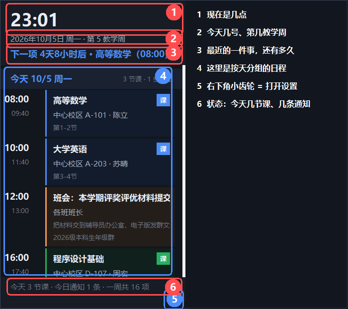
点下面的章节名可直接跳到那一章；图点一下能放大，整页可以收藏。
10. 窗口找不到了怎么办
11. 数据在哪、怎么备份、怎么恢复
12. 常见问题
13. 命令行参数
它干两件事：
| 它做的 | 说明 |
|---|---|
| 把群通知变成日程 | 粘一段群消息进来，它自动认出时间、地点、人员、备注，排进时间线，一周内自动去重 |
| 把课表铺到每一天 | 导入课表文件（WakeUp .ics、教务 PDF、网页、CSV 都行），按上课时间展开到每一天 |
它不做这些：
| 窗口 | 长什么样 | 干什么 |
|---|---|---|
| 日程表（也叫"面板"） | 桌面右边那条，一直待着 | 看日程、处理单条日程 |
| 控制台 | 点面板右下角齿轮才出来 | 改设置、导课表、录通知 |
| 教程（就是这个窗） | 你现在看的 | 说明文档，能搜索 |
看不懂命令行、忘了某个按钮在哪？控制台顶栏就有一个 「使用教程」 按钮（一点就开）；
「设置」页 「帮助」 那一块也有 「查看使用教程」，
随时能把这份文档打开（能搜索、能跳章节）。
想要更大更清楚的图、或者想收藏这一页：教程窗右上角点 「在浏览器打开」 ——
它会生成 docs/教程.html 并用系统浏览器打开，那版每章是一张卡片、图可以点开放大，
也能用浏览器的收藏与页内查找（Ctrl+F）。
双击桌面上的 「桌面日程」。桌面右边会出现那条日程表。
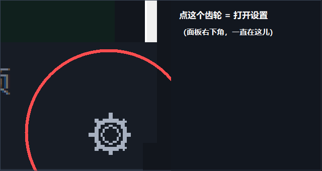
点那个齿轮，菜单第一项就是 「日程表设置…」：它会把控制台叫出来，并直接停在「设置」页。
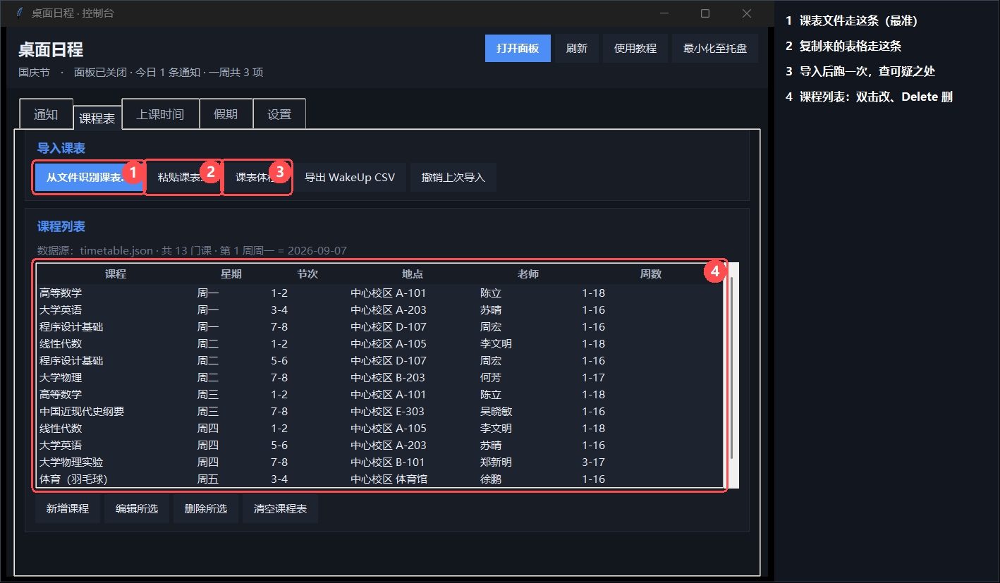
详细操作见 第 4 节。
最快的办法：在 QQ 里选中那条通知文字，按一下热键（默认 Ctrl+Alt+Q）。
面板底部会告诉你了什么。
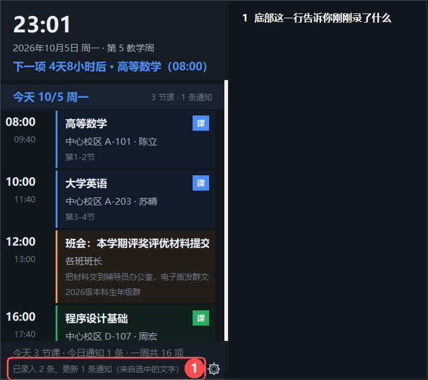
其他办法见 第 5 节。
控制台 →「设置」→ 勾上 「开机后自动打开日程表面板」。以后开机它就自己出来。
只想在需要时手动开：双击项目目录里的 start-panel.cmd。
| 位置 | 是什么 |
|---|---|
| 顶部大数字 | 现在几点 |
| 下面一行 | 今天几号、第几教学周（假期另说） |
| 再下面一行 | 下一项：最近的一件事还有多久 |
| 中间 | 按天分组：每天有哪些课、哪些通知 |
| 最下面一行 | 状态：今天几节课、几条通知、上次整合时间；临时提示也在这儿 |
| 右下角 | 齿轮 = 打开设置 |
| 想干什么 | 怎么做 |
| 看某条的全文 | 双击那张卡片 |
| 选中某条 | 单击卡片任意位置；再点一下取消 |
| 处理某条 | 右键那张卡片 → 菜单（见 第 6 节） |
| 翻页 | 滚轮，或拖右边那条细滚动条 |
| 移动面板 | 按住顶部标题区或面板空白处拖动。松手就记住位置，下次启动还在那儿 |
| 改宽度 | 拖右下角，或拖右侧/下侧的隐藏边缘 |
| 打开设置 | 点右下角 ⚙ |
| 全局菜单 | 在面板空白处右键 |
一周都没安排时，只画一句 「暂无日程安排」。
Win+D 都不消失；只有全屏应用（游戏/视频）在前台时会临时隐身，切回来自动回来；或者你自己右键「收起面板」。控制台 →「课程表」页。
点 「从文件识别课表…」，可以多选。认得的格式：
| 后缀 | 从哪来 |
|---|---|
.ics |
WakeUp 课程表 → 导出（最准，含绝对日期） |
.pdf |
教务系统打印/导出的课表 |
.html .htm |
课表网页"另存为" |
.csv .tsv |
Excel / WPS / WakeUp 模板 |
.json |
本程序自己的 timetable.json |
.txt .md |
直接复制出来的课表文字 |
识别只是"猜"，所以程序不会直接覆盖你的课表，而是先弹确认窗给你看。
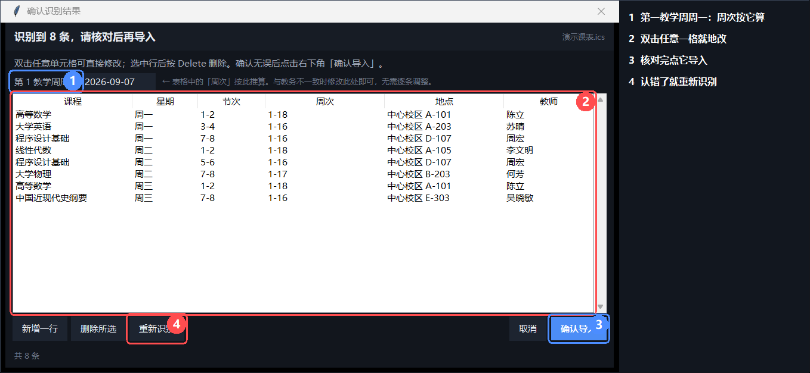
| 要改什么 | 怎么改 |
|---|---|
| 某一格写错了 | 双击那一格，就地改 |
| 多了一行 | 选中这行按 Delete，或点「删除所选」 |
| 少了一行 | 点「新增一行」 |
| 全都认错了 | 点「重新识别」 |
| 不想导了 | 点「取消」或按 Esc——课表一个字都不会变 |
窗口上方有个 「第 1 教学周周一」，周次是按它算的。
教务写"第 4 周"、程序算成"第 3 周"？改这一个框就对齐了，不用逐行改。
点 「粘贴课表…」：从 Excel / WPS / 网页 / 教务复制的表格文本或整页 HTML 都认，
一样会过确认窗。
3-4）、地点、老师、周次Delete 删除点 「导出 WakeUp CSV」，把生成的文件发到手机上，用 WakeUp 的"excel导入"打开。
识别偏差不会报错，只会安静地少一门课、把周次读成节次。点 「课表体检」，
它把可疑之处一次列出来，分 ✗ 问题 和 ⚠ 建议核对 两级。
它能查：节次超出上课时间表、结束节次小于开始节次、同一时段两门课、课名里混进教务字段、
周次异常、完全重复的行、同一门课同时有单周和双周、缺地点/教师/周次、没设「第 1 教学周周一」。
结果窗可以复制报告或保存为文件。体检只检查，不会自动修改课表。
| 写法 | 意思 |
|---|---|
1-16 |
第 1 到 16 周，每周都上 |
1-5、7-11单 |
1~5 周，加上 7~11 周的单周 |
2-8双 |
2~8 周的双周 |
| 留空 | 每周都上 |
五条路，挑一条顺手的。
把 QQ 导出的消息存成 .txt，直接拖到桌面面板上：
.ics / .pdf 会按课表识别QQ 导出的文件常是 GBK 编码，也认。
控制台 →「通知」页 → 把群消息粘到上面那个大框 → 点 「保存并刷新」。
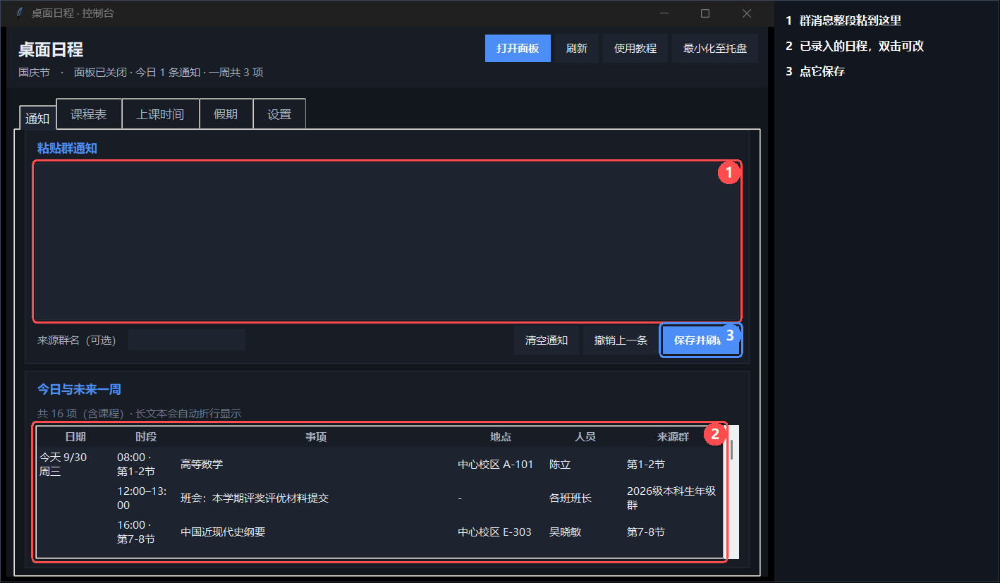
[群名] 开头分隔[群名] 就以它为准）Ctrl+Enter 也能保存面板空白处右键 →「快速录入群消息…」：叫出一个小窗，粘上就能存。
在 QQ 里选中通知文字，直接按热键（默认 Ctrl+Alt+Q）。不用先按 Ctrl+C。
程序会：读到选中的文字 → 解析 → 入库 → 在面板底部告诉你了什么（见上面那张图）。
Ctrl+C 是中断信号，可能打断你正在跑的命令）。Ctrl / Alt / Win 中至少一个。只带 Shift 的（比如 Shift+Z）会被拒绝——你一打大写字母就会触发它。把 .txt 丢进 data\inbox\，然后：
run-daily.cmd整合过的文件自动移到 data\archive\。
（文件名里有 示例/demo/sample/test 的会被跳过。）
这样写最准：
[群名]
通知：9月25日 14:00-15:30 在3号楼201会议室召开班级例会，负责人：张伟老师，请携带笔记本。
| 字段 | 支持的写法 |
|---|---|
| 日期 | 今天 / 明天 / 后天 / 这周五 / 下周三 / 周五 / 9月25日 / 9/25 / 2026-09-25 |
| 时段 | 14:00-15:30、14点到15:30、下午3点到5点、上午9点、今天中午12:00前 |
| 地点 | 在3号楼201会议室、实验楼B302、三教302、腾讯会议、线上 |
| 人员 | 负责人：张伟老师、@王强、联系人：陈静、由X负责 |
| 备注 | 备注：…、请携带…、请提前… 后面的整句 |
完全没写日期的：按粘贴当天归档，并标红「日期待确认」——它不猜。
写了区间又写了「每日」的（例：9月25日-28日期间，每日上午11:00前统计…）：
只记一条，落在区间的最后一天，备注写明「连续事项：09月25日–09月28日 每日（09月28日 截止）」。
不摊成 4 条，是因为这类事本质上是"一条有截止日的事"，摊开会把空闲日子填满同名卡片。
右键面板上任意一张卡片（控制台「通知」页下面的列表也行）：
| 菜单项 | 做什么 |
|---|---|
| 编辑此条通知… | 手动改识别结果：标题 / 日期 / 开始 / 结束 / 地点 / 人员 / 备注 |
| 选中此条（下次按热键 = 补充备注） | 之后按热键拿到的那段文字，会并进这条的备注，而不是新建一条 |
| 标记为已完成 | 事办完了，这条从日程里消失 |
| 修改结束时间… | 弹出小窗，时 / 分各一个下拉框 |
| 复制内容 | 标题 / 时间 / 地点 / 人员 / 备注一行进剪贴板 |
| 删除此条… | 彻底删除（会先确认一次） |
细节：
events.json；标记为已完成或删除即从日程里移除群里的通知常常不止一条：正主发一条，后面又追一句「地点改到 302」。
做法：先点一下那条通知的卡片（边框变蓝＝已选中），再按热键。
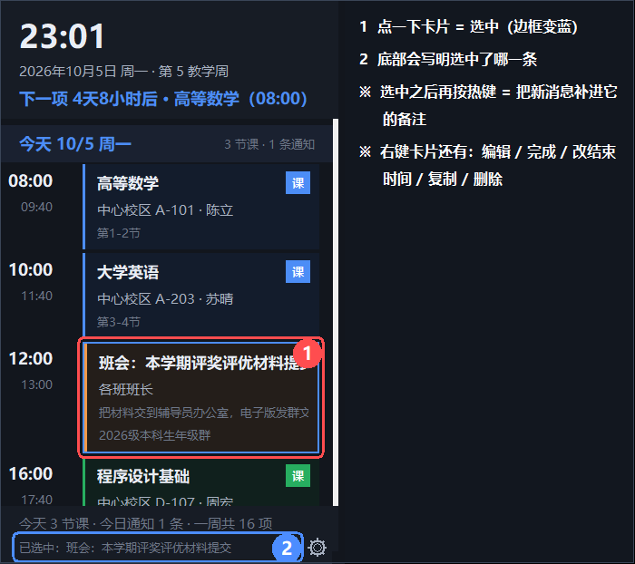
日期用的是三段输入框（年 / 月 / 日各一格），中间那个短横线是分隔符，删不掉。
填错不会关窗，下面用红字说明哪里不对。
控制台 →「上课时间」页。
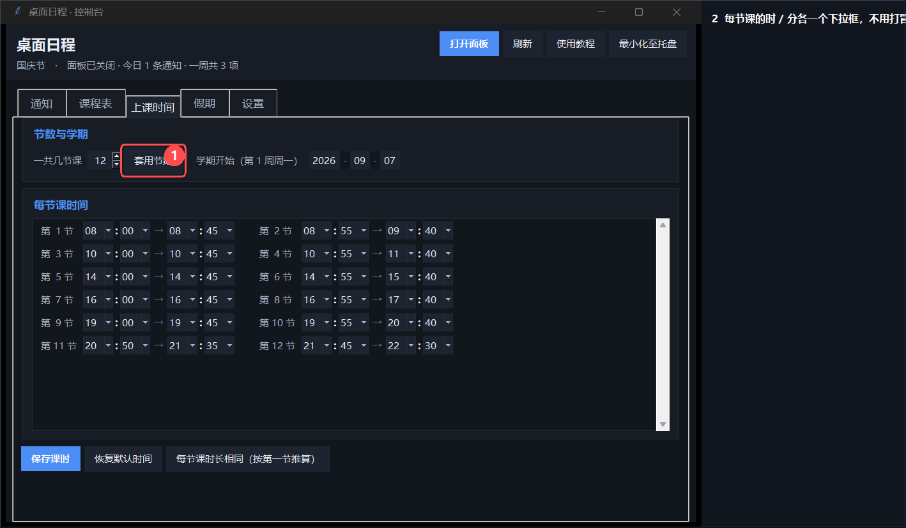
| 项 | 说明 |
|---|---|
| 一共几节课 | 1~24 节，改完点「套用节数」，下面的输入框会重排（已填的时间会带过去） |
| 每节的开始 / 结束 | 时、分各一个下拉框，不用打冒号 |
| 学期开始（第 1 周周一） | 三段式日期框；周次按它算；填成非周一会被提示并自动校准 |
| 保存课时 | 保存并让面板按新时间重排 |
| 恢复默认时间 | 回到内置课时 |
| 每节课时长相同 | 按第一节的时长把后面每节推平 |
写错了会被拦住：下课时间不早于上课时间、中间不能空一节。
控制台 →「假期」页。这一页解决三件事：放假不排课、调休要补课、过节有点气氛。
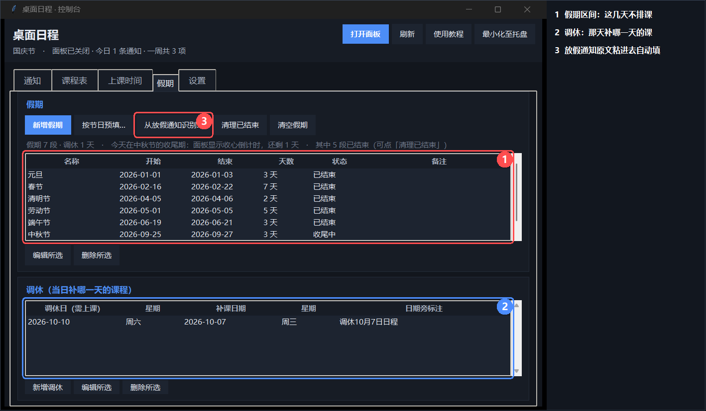
| 字段 | 说明 |
|---|---|
| 名称 | 只是给你自己看的标签。节日彩蛋按日期判定，不认这个名字 |
| 开始 / 结束 | 三段式日期输入 |
假期里一门课都不排，但群通知照常显示——放假期间老师照样发通知，这条是特意要的。
假期表有一列状态：未开始 / 进行中 / 收尾中 / 已结束。
假期到点自动失效，不用手动删；历史条目可以用「清理已结束」一键收掉。
四个按钮：
| 按钮 | 做什么 |
|---|---|
| 新增假期 | 手动加一段；双击表格里的行也能改 |
| 按节日预填… | 按"节日当天 + 常见连休天数"铺一份草稿（结果是推算，以学校通知为准） |
| 从放假通知识别… | 把放假通知原文粘进去，自动识别假期区间与调休日 |
| 清理已结束 | 把已经过去的假期删掉 |
假期一结束，面板自动回到正常排课；紧接着的三天会在日期下方多一条提示：
✦ 国庆节假期已结束 · 收心倒计时 3 天
第四天起自动消失。
调休窗是"一行一组"：左边调休日（当天要上课），右边补课日期（补哪一天）。
例：10月10日（周六）补 10月7日（周三）的课。
面板那天的日期旁边会多一行小字：
今天 10/10 周六 调休10月7日日程 4 节课
这行字默认是 「调休X月X日日程」 的格式，也能自己在窗里改成别的说法。
触发条件（越靠前越优先）：
data\calendar.json 里包含这个节日日期的假期区间内只看日期，不看假期叫什么名字：你把假期写成「中秋国庆连放」也好、改成「放假」也好，
效果完全一样。
一个区间里包含多个节日时（典型是两个节并成一条），按各节日自己的天数分段：
| 日期 | 面板 |
|---|---|
| 9/22–9/24 | 中秋节（还有 3/2/1 天） |
| 9/25 | 中秋节 |
| 9/26–9/30 | 没有彩蛋（中秋已过、国庆未到） |
| 10/1–10/7 | 国庆节 |
| 10/8–10/10 | 国庆节（收心倒计时） |
有彩蛋的日子，面板顶部会多一条横幅：节日配色 + 装饰 + 一句祝福。
点一下横幅展开该节日的彩蛋文案（再点收起）。面板边框也会换成节日主色并慢慢"呼吸"。
彩蛋覆盖 农历 1900–2100 年（春节、元宵、端午、中秋按农历，清明按节气，
由随程序附带的农历库算）。
2026年9月25日 周五 · 第 3 教学周2027/1/1，年份一目了然控制台 →「设置」页。这一页只有功能名称，说明都在这儿。
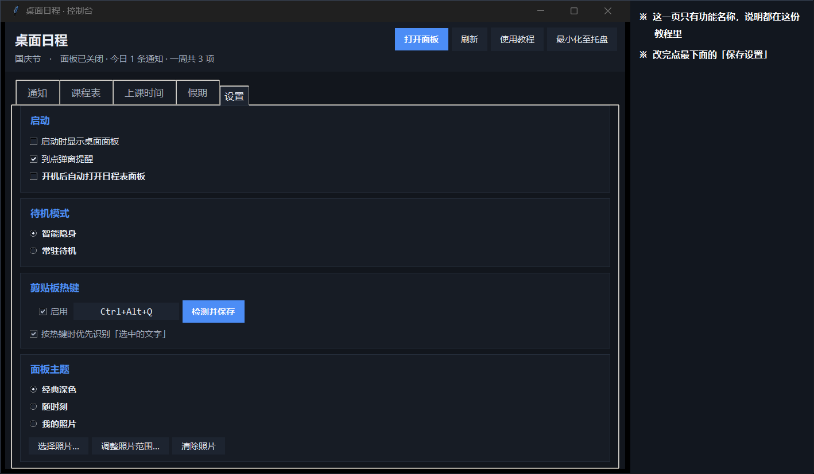
| 设置 | 说明 | 建议 |
|---|---|---|
| 启动时显示桌面面板 | 下次启动是否自动拉起面板 | 开 |
| 到点弹窗提醒 | 事项开始前弹个小窗 | 开 |
| 待机模式 | 智能隐身＝检测到全屏应用（游戏/视频）时自动让位，切回桌面立刻恢复；常驻待机＝全屏时面板也不隐藏，一直在屏幕上 | 智能隐身 |
| 剪贴板热键 | 是否启用、用哪个组合；「按热键时优先识别「选中的文字」」关掉后只读剪贴板 | 开，Ctrl+Alt+Q |
| 面板主题 | 三选一，见下 | 经典深色 |
| 开机自启动 | 勾上＝登录后自动打开日程表面板（不开控制台） | 按需 |
| 保存设置 | 改完点它 | — |
| 模式 | 效果 | |
| 经典深色 | 固定配色，不随时间变化（默认） | |
| 随时刻 | 配色跟着天色走：清晨（05–09）/ 白天（09–17）/ 黄昏（17–20）/ 深夜（20–05）四套，跨过时段自己换 | |
| 我的照片 | 用你自己的照片：照片铺在面板顶部，整套配色由照片取色生成，文字颜色按背景明暗自动切换 |
换照片：「我的照片」→「选择照片…」→ 选文件 → 框选显示范围 → 保存。
支持 JPG / PNG / BMP / GIF，会转存到 data\theme\ 下，不引用原图（原图挪走也没事）。
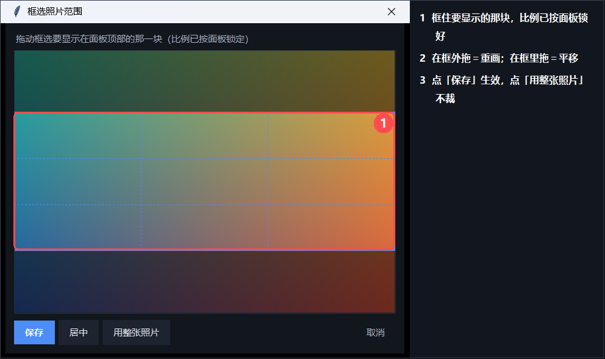
勾上 「开机后自动打开日程表面板」，立刻生效，不用保存、不用重启。
只开面板，不开控制台——这条是固定的，界面上没有开关。
（登录后只出现桌面右边那条日程表；控制台要你明确再要一次。）
实现方式是在「启动」文件夹放一个快捷方式，指向 tools\launch-panel.vbs，
不需要管理员权限、不写注册表。你自己删掉那个快捷方式，设置页的勾也会跟着取消。
想彻底撤掉，取消勾选，或跑 tools\uninstall.cmd。
双击桌面上的「桌面日程」快捷方式：面板会立刻出现在屏幕上，并且**临时跳到所有窗口
最上面 3 秒**（浏览器开着也不怕被盖住），3 秒后回到它平时待的桌面层。
为什么要"临时"跳上来：面板平时是桌面挂件，压在普通窗口之下。不跳上来的话，
你双击了快捷方式却什么也看不到 —— 会以为是"点了没反应"（真有人这么报过）。
托盘图标（屏幕右下角通知区）一直都在：只要程序在跑 —— 哪怕只开了日程表面板 ——
那里就有「桌面日程」的图标。
立即整合群通知 / 退出应用」。
点它没反应？那多半是个残留图标：程序被强杀（任务管理器结束进程、或崩溃）时，
Windows 会把这个图标留在通知区，直到你把鼠标移上去或重启资源管理器。
把鼠标在它上面停一下就会消失，然后再从桌面快捷方式正常启动一次即可。
它可能被最小化至托盘了（进程还在）。两种办法叫回来：
| 办法 | 怎么做 |
|---|---|
| 点面板右下角 ⚙ | 齿轮菜单里有「打开客户端窗口」 |
| 托盘图标 | 双击图标，或右键 →「呼出客户端窗口」 |
| 情况 | 处理 |
| 有全屏应用在前台 | 正常（智能隐身在起作用），切出来就回来 |
| 曾手动收起 | 双击桌面快捷方式——它会把面板叫回眼前 |
| 面板进程真的退了 | 同上：双击桌面快捷方式会重新拉起它 |
| 就是不出来 | 命令行跑 runtime\python.exe main.py --panel，再看 data\panel.log |
点控制台右上角的 X 只是把它最小化至托盘：日程表继续显示、通知照收、到点提醒照弹。
完全退出只有两个入口（都会把面板和托盘一起退干净）：
| 入口 | 位置 |
|---|---|
| 退出应用 | 托盘图标右键 |
| 退出应用（面板与托盘一并退出） | 面板右下角 ⚙ 菜单最后一项，或右键底部状态行 |
| 菜单项 | 做什么 |
| 呼出客户端窗口 | 把控制台叫到最前面 |
| 快速录入群消息… | 叫出控制台、切到「通知」页，粘上就能存 |
| 打开桌面面板 / 收起桌面面板 | 开关桌面那条日程表 |
| 立即整合群通知 | 立刻整合一次 data\inbox |
| 退出应用 | 面板 + 托盘一起退干净 |
全部在 data\ 目录，都是能直接看的 JSON：
| 文件 | 是什么 |
|---|---|
events.json |
一周内的通知（日程本体） |
timetable.json |
课程表 + 课时表 + 学期开始 |
calendar.json |
假期区间 + 调休 |
client.json |
设置 |
state.json |
上次整合的时间与摘要 |
inbox\ |
待整合的群消息（丢这里会被处理） |
archive\ |
整合过的原始文件 |
theme\ |
你选的背景照片 |
panel.log |
出错时的日志（正常时是空的） |
data\ 拷走就是完整备份。events.json 清空通知；删 timetable.json 清空课表。timetable.json.bak（「撤销上次导入」用它）。这个目录别分享给别人：里面有你的课表和通知。发给朋友的是程序目录，不是 data\。
| 现象 | 处理 |
|---|---|
| 双击快捷方式没反应 | 日程表可能已经在跑了——这时它会把面板叫到眼前。要控制台请点面板右下角 ⚙ |
| 控制台打不开 | 它可能已最小化至托盘：双击托盘图标，或点面板 ⚙ →「打开客户端窗口」 |
| 面板点不动 | 检查 data\client.json 里 "click_through" 是不是被手改成了 true，改回 false 再重启面板 |
| 面板被别的窗口挡住 | 它是桌面层窗口，属正常；想始终在最前，把 client.json 的 "window_mode" 改成 "topmost" |
按 Win+D 后面板消失 |
检查 client.json 里 "pet_mode" 是不是被改成了 false（默认 true） |
| 游戏里被挡 | 设置 → 待机模式 → 选「智能隐身」 |
| 放假了还在排课 | 「假期」页加一段假期，或把放假通知粘进去让它自己认 |
| 调休那天显示平时的课 | 「假期」页下面加一条调休：调休日 + 补哪天的课 |
| 节日当天没有彩蛋 | 当天必定出现（按内置农历算）。想让整个假期都有气氛，就加一段包含节日当天的区间 |
| 文件提示「未能识别课表」 | 命令行看一眼：runtime\python.exe -m agenda.file_import 你的文件，会打印读到的内容和卡在哪一步 |
| 周次和教务不一样 | 在确认窗顶部改「第 1 教学周周一」 |
| 读到的课缺老师/地点 | 确认窗里双击补上 |
| 通知标题粘了半句话 | 已修：现在会在「事项名：说明」的冒号处截断。还有问题请把原文发我 |
| 拖入文件没反应 | 确认拖的是文件或文件夹（不是选中的文字） |
| 面板滚动卡 | 已优化（卡片控件复用）。仍卡请反馈通知数量 |
| 需要适配别的学校 | 跑 runtime\python.exe tools\probe_schools.py 看那个学校的入口形态 |
一般用不到，排错和自动化时有用（runtime\python.exe 是项目自带的 Python）：
runtime\python.exe main.py --shortcut # 桌面快捷方式入口：只开面板
runtime\python.exe main.py --panel # 只开面板（开机自启动走这条）
runtime\python.exe main.py --client --start-panel # 控制台 + 面板
runtime\python.exe main.py --tutorial # 打开这份教程（窗口版）
runtime\python.exe main.py --tutorial-web # 生成网页版教程并用浏览器打开
runtime\python.exe main.py --status # 命令行看一周日程
runtime\python.exe main.py --once # 整合 inbox 一次
runtime\python.exe main.py --check-timetable # 逐条列出读到的课
runtime\python.exe main.py --paste --group 班群 # 从 stdin 粘一条通知
runtime\python.exe main.py --list-schools # 看已登记的学校
runtime\python.exe -m agenda.file_import 课表.ics # 单独试文件识别
runtime\python.exe -m unittest discover -s tests -t . # 跑测试
其它开关：--width、--refresh、--pipeline-minutes、--window-mode、
--no-click-through、--always-visible、--no-pet-mode、--panel-x/--panel-y、--data-dir。
重新生成这份教程里的配图（改了界面之后）：
runtime\python.exe tools\capture_tutorial.py
README.md —— 面向开发者：架构、扩展点、每个实现选择的实测证据docs/school-reachability.md —— 四所学校入口的实测记录data\ —— 你的数据，都是明文 JSON，可以直接编辑